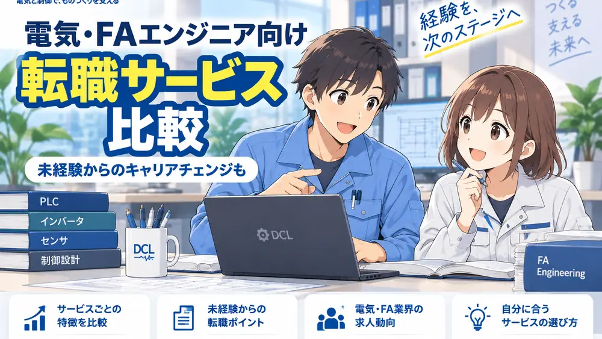

転職サービスは「有名か」より「自分の経験が通じるか」で選ぶ
電気・FA系の仕事は、同じ職種名でも担当範囲がかなり違います。PLCだけを見る会社もあれば、盤・配線・立上げ・設備改善まで一体で担当する会社もあります。
そのため、転職サービスを選ぶときは求人数だけでなく、自分の経験をどこまで理解して求人へつなげてもらえるかを見るのが大切です。

転職サイトって、求人数が多いところを選べばいいんですか？

数も大事だけど、FA系は経験の中身が伝わるかがもっと大事だよ。PLC、設備、立上げ、保全みたいに、自分の担当範囲を理解してもらえるサービスを選ぼう。
電気・FAエンジニアが最初に見る4項目
登録前に、次の4点を確認しておくと比較しやすくなります。

現在掲載している転職サービス
このページでは、提携承認を確認できたサービスだけを掲載しています。未承認サービスを数合わせで並べることはしません。
メーカーズジョブ
メーカー・製造業特化メーカー・製造業に特化した転職エージェント。製造業で培った専門性を次のキャリアへつなげたい人向けの選択肢として確認しておきたいサービスです。
| 当サイト読者との相性 | PLC・制御設計、設備保全、生産技術など、製造現場に近い経験を持つ人が相談先の候補として確認しやすい。 |
|---|---|
| 相談時に伝えたいこと | 担当設備、PLCメーカー、立上げ・改造・保全の範囲、出張や夜間対応の有無など。 |
| 個別確認が必要なこと | 希望職種、経験年数、勤務地で紹介可能な求人があるかは面談時に確認が必要。 |
相性を確認しやすい人
- 製造業での経験を活かして転職したい
- 制御・設備・生産技術など技術職の経験を説明したい
- 求人選びだけでなく面接や条件面も相談したい
登録前に確認したい人
- 勤務地をかなり限定したい
- 未経験から別分野へ大きく方向転換したい
- 求人紹介を受けず自分だけで応募したい
転職をすぐ決める必要はありません。まずは希望条件と技術経験を整理して、紹介可能な求人があるか確認する使い方ができます。
※外部サイトへ移動します。申込み・面談前に最新の対象条件やサービス内容をご確認ください。
面談前に整理しておくと伝わりやすい5項目
- 担当設備：搬送、組立、検査、加工、包装など
- 制御経験：PLCメーカー、ラダー変更、I/O確認、通信、HMIなど
- 担当範囲：設計、配線、立上げ、改造、故障対応、保全など
- 働き方：出張、夜間、休日対応、転勤の可否
- 次にやりたいこと：設計寄り、保全寄り、設備改善寄りなど

転職サービスを使う流れ
1
職種、設備、PLC経験、勤務地、年収、転勤可否などをまとめます。
2
応募前に、自分の経験でどんな求人が候補になるか確認します。
3
仕事内容だけでなく、設備・工程・出張・夜勤・転勤など実務条件まで見ます。
4
担当範囲と、自分で判断した内容を具体化します。
5
仕事内容、年収、勤務地、勤務形態を確認してから決めます。
よくある疑問
求人相場や自分の経験の評価を知る目的で相談する使い方もあります。転職時期は最初に伝えておくと話が進みやすくなります。
PLCメーカー名だけでなく、I/O点数、担当工程、立上げ、改造、トラブル対応、盤・図面・ネットワークの範囲などを具体化します。
紹介可能な求人は経験や地域によって変わります。未経験の場合は、学習状況と前職経験をどうFA・製造業へつなげるかも整理して相談します。
提携・掲載条件を確認できたサービスから追加し、同じ基準で比較できるようにします。
まとめ
電気・FAエンジニアが転職サービスを選ぶときは、求人数だけでなく、自分の技術経験を理解してもらえるかを見ることが重要です。職種、設備、担当範囲、働き方を整理したうえで相談すると、求人との相性を判断しやすくなります。
このページでは現在、提携確認済みのメーカーズジョブを掲載しています。ほかのサービスは承認後に同じ基準で追加します。